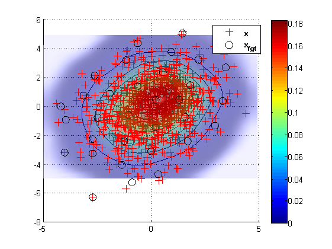

Contents
% fgt_model : returns the Fast Gauss Transform Aprroximation Model of a Kernel density % % % Usage % ------- % % % [xc , Ak] = fgt_model(x , [w] , [sigma] , [e] , [K] , [p] ); % % Inputs % ------- % % x Source data (d x Nx) % w Weigths (1 x Nx) ( default w = ones(1 , Nx) ) % sigma Noise Standard deviation of the kernel (default sigma = 1) % e Ratio of far field (default e = 10) % K Number of centers (default K = sqrt(Nx)) % p Order of truncation (default p = 8) % % % % Ouputs % ------- % % xc The K center points of the training set (d x K) % Ak Polynomial coefficient (pd x K), where pd = nchoosek(p + d - 1 , d) = prod(1:p + d - 1)/(prod(1:p - 1)*prod(1:d)) %
% fgt_predict : returns the Fast Gauss Transform approximation of the test points y given the model \theta=(xc,A_k) % % Usage % ------- % % v = fgt_predict(y , xc , A_k , [sigma] , [e] ); % % Inputs % ------- % % y Test point (d x Ny) % xc Kcenter point (d x K) % A_k Polynomial coefficient (pd x K), where pd = nchoosek(p + d - 1 , d) % sigma Noise Standard deviation of the kernel (default sigma = 1) % e Ratio of far field (default e = 10) % % Ouputs % ------- % % v Density (1 x Ny)
Exemple1 %%
clear,close all hidden, d = 3; Nx = 10; Ny = 100; x = randn(d , Nx); y = randn(d , Ny); w = rand(1 , Nx); h = 2; e = 10; p = 6; K = 5; v1 = dval(x , y , w , h); [xc , A_k] = fgt_model(x , w , h , e , K , p); v2 = fgt_predict(y , xc , A_k , h , e); disp(sprintf('error = %5.4f',norm(v1 - v2))); pause, clear,close all hidden,
error = 0.0001
Exemple2 %%
d = 2; R = [2 , 0.4 ; 0.4 3]; Nx = 1000; h = 1; e = 10; K = round(sqrt(Nx)); p = 6; vect = (-5:0.3:5); Ny = length(vect); w = (1/Nx)*ones(1 , Nx); x = (chol(R)'*randn(d , Nx)); [X , Y] = meshgrid(vect); y = [X(:) , Y(:)]'; [xc , A_k] = fgt_model(x , w , h , e , K , p); vy = fgt_predict(y , xc , A_k , h , e , K , p); densite = reshape( vy , Ny , Ny); figure set(gcf , 'renderer' , 'opengl'); surfc(X , Y , densite) shading interp lighting phong light alpha(0.5); hold on h = plot(x(1 , :) , x(2 , :) , 'r+' , xc(1 , :) , xc(2 , :) , 'ko' , 'markersize' , 10); hold off legend(h(1:2) , '\bf{x}' , '\bf{x}_{fgt}' , 0); view(2) colorbar